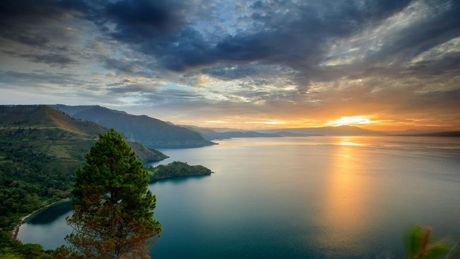
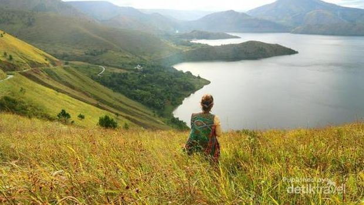
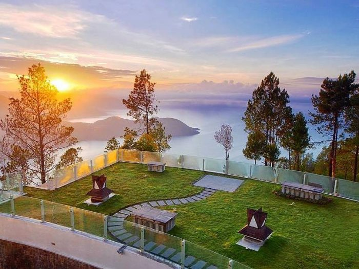
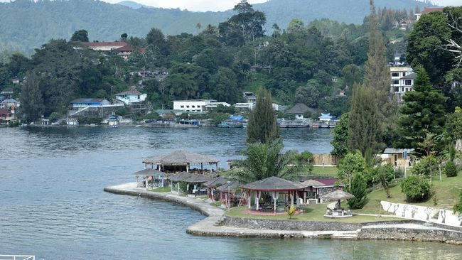
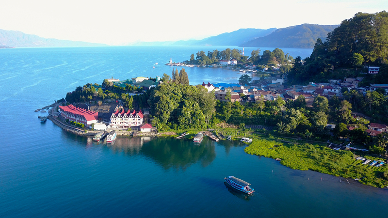
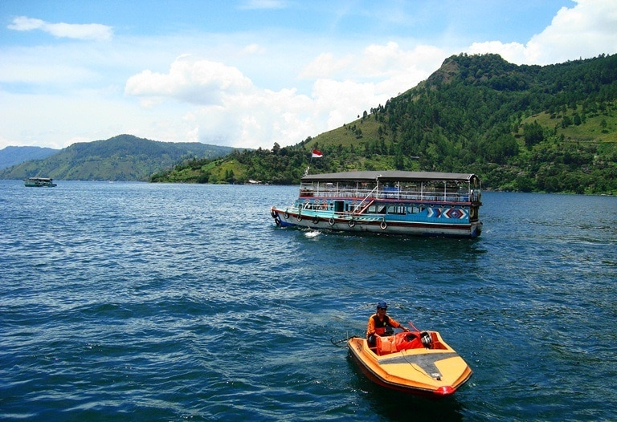

Danau Toba adalah danau alami berukuran besar di Indonesia yang berada di kaldera Gunung Supervulkan. Danau ini memiliki panjang 100 kilometer (62 mil), lebar 30 kilometer (19 mi), dan kedalaman 505 meter (1657 ft). Danau ini terletak di tengah pulau Sumatra bagian utara dengan ketinggian permukaan sekitar 900 meter (2953 ft). Danau ini membentang dari 2.88°N 98.52°E sampai 2.35°N 99.1°E. Ini adalah danau terbesar di Indonesia dan danau vulkanik terbesar di dunia.
Geologi
Kompleks kaldera Toba di Sumatra Utara merupakan bagian dari Pegunungan Bukit Barisan. Kaldera Toba merupakan kaldera dengan letusan terbaru dari zaman kuarter dengan ukuran panjang 100 km dan lebar 30 km serta merupakan kaldera termuda keempat di dunia. Diperkirakan terdapat 2.800 km3 material piroklastik dense-rock equivalent (DRE) yang dikenal sebagai tuff termuda Toba (Youngest Toba Tuff, YTT) dan dikeluarkan lewat sebuah letusan yang menjadi salah satu letusan gunung api terbesar dalam sejarah geologi terkini Bumi. Dua buah setengah kubah resurgent muncul setelah letusan yang kini menjadi Pulau Samosir dan Blok Uluan, dipisahkan oleh sebuah graben membujur yang menjadi Selat Latung. Setidaknya terdapat empat kerucut vulkanik, empat gunung api strato, dan tiga kawah yang dapat diamati di dan di sekitar Danau Toba. Salah satu kerucut yaitu Kerucut Tandukbenua terletak di sisi barat laut kaldera dan hanya ditumbuhi oleh vegetasi berkepadatan rendah yang menunjukkan bahwa peristiwa pembentukannya relatif baru. Di sebelah barat danau, terdapat Dolok Pusubukit masih aktif mengeluarkan solfatara.
Penduduk
Sebagian besar penduduk yang tinggal di sekitar Danau Toba adalah suku Batak. Rumah tradisional Batak dapat dikenali dari bentuk atapnya (ujungnya melengkung ke atas seperti perahu) dan warna cerah.
Penduduk sekitar juga banyak menggantungkan hidup dengan mengembangkan perikanan air tawar. Dulu, wajah Desa Haranggaol, Kecamatan Haranggaol Horison yang dikenal sebagai tujuan wisata di Simalungun menjadi sentra ikan air tawar. Di sana, menurut sebuah laporan, belasan truk yang mengangkut puluhan ton ikan mas dan nila mondar-mandir di jalan desa.
Flora dan Fauna
Flora di danau ini meliputi berbagai jenis fitoplankton, makrofita kecil, makrofita mengambang, dan makrofita terbenam, sedangkan daratan sekitarnya ditutupi hutan hujan, termasuk jenis hutan pinus tropis Sumatra di daerah pegunungan yang lebih tinggi.
Fauna di danau ini meliputi beberapa spesies zooplankton dan hewan bentos. Karena danau ini oligotrof (tidak kaya nutrien), ikan aslinya tergolong langka. Hanya ada dua ikan endemik di danau ini, yaitu Rasbora tobana (bisa disebut hampir endemik karena juga ditemukan di sungai-sungai yang bermuara di danau ini) dan Neolissochilus thienemanni, biasa disebut ikan Batak. Spesies yang disebutkan terakhir itu terancam oleh deforestasi (penyebab siltasi), polusi, perubahan ketinggian air, dan spesies ikan baru yang didatangkan ke danau ini. Spesies ikan asli lainnya adalah Aplocheilus panchax, Nemacheilus pfeifferae, Homaloptera gymnogaster, Channa gachua, Channa striata, Clarias batrachus, Barbonymus gonionotus, Barbonymus schwanenfeldii, Danio albolineatus, Osteochilus vittatus, Puntius binotatus, Rasbora jacobsoni, Tor tambra, Betta imbellis, Betta taeniata, dan Monopterus albus. Spesies ikan pendatang meliputi Anabas testudineus, Oreochromis mossambicus, Oreochromis niloticus, Ctenopharyngodon idella, Cyprinus carpio, Osphronemus goramy, Trichogaster pectoralis, Trichopodus trichopterus, Poecilia reticulata, dan Xiphophorus hellerii.
Gallery





